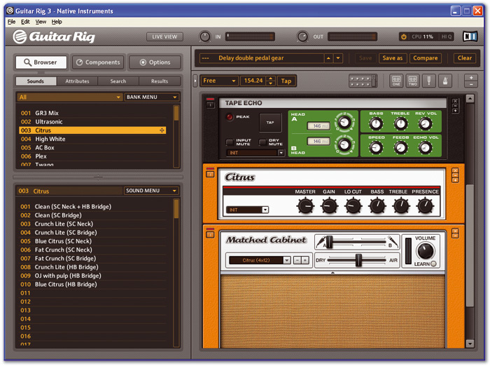

Words / posts / Computer Music
Guitar Rig 3 Demo - Audio Line-In glitch fixed!!
The other day I decided to have a go with the already-famous Guitar Rig 3 (a music production software for guitarists, including amplifiers, effects etc etc). Here's the official blurb:
GUITAR RIG 3 is the ultimate all-in-one guitar and bass solution. Simply connect your guitar with your computer via the enhanced Rig Kontrol 3 foot pedal and you are ready to go. The on-board studio-quality soundcard routes the signal to your speakers, while the software grants you access to an incredible number of perfectly modeled classic amps, cabinets, mics and effects - all arranged in a super-simple drag-and-drop rack format. Any style, any time - the perfect solution for professional studio and live setups.

Trying out the demo
From the Native Instrument site you can download a demo version, so I did and set off to have some fun with my guitar.. obviously!
I didn't have the Rig Kontrol 3 foot pedal, but the instructions said it was possible to use the software just as a virtual instrument - that is by plugging your guitar directly into the line-in of the mac (as I don't have an external audio interface yet).
Unfortunately it wasn't that easy - the audio controls of Guitar Rig didn't allow me to choose my mac's LineIn, so no sound at all !!!
I googled the issue quite a bit, found out that other people run into the same problem.
Thus I emailed directly the guys at Native Instruments, and (I wasn't expecting this) they got back to me after a couple of days!!! Thanks Nadine :-)
Using an 'Aggregate Device'
Here's their feedback - thought it could have been useful to other mac users:
In order to fix this problem, please create an "Aggregate Device". An Aggregate Device is an audio interface that virtually exists in your computer. It uses audio inputs and outputs of one or more real audio interfaces which are connected to your computer.
How to setup a generated device:
- Open the OS X "Audio and MIDI setup" (MacHD/Applications/Utilities) and click on Audio -> Open aggregate device editor.
- By clicking on the "+" button you can add a new device. Below you should see a list of real audio interfaces currently connected to your computer. Click on the check box to enable interfaces as needed for this aggregate device. Close the editor when done.
- In the Audio settings window of the audio application you can now choose this "aggregate device" as your output device.
- For Native Instruments standalone applications also setup the inputs and outputs as necessary under the Audio settings window/tab Routing.
I didn't know anything about Aggregate Audio, it's really really nice. For example it lets you manage your audio-input ports in such a way that you can use more than one at the same time, e.g. recording more than one instrument at the same time with Garage Band.
So I tried to create a 'virtual' audio device using the Aggregate Device menu-option in the Audio-Midi-Setup utility (update 22/11/09: if you're on SnowLeopard the Audio-Midi-Setup app looks a bit different, but what follows is till valid!).
Unfortunately it didn't let me do that - every time I was making some changes to these settings they were not stored properly (on SnowLeopard the newly created device flashes and disappears every time). Some more googling, got an answer here. It's an issue with unix privileges on the .GlobalSettings.plist file (in /Library/Preferences). Even if I'm an admin user, for some reasons the system doens't let me change that file, so I can't change the Aggregate Device options too.
After trying various options suggested in this apple forum, I discovered that the only solution that worked for me was changing the privileges on the Preferences folder.
I know, it's not really advisable to allow any user to change those prefs - but I took the risk.. I'm usually the only one using this mac. So if this is not the case for you, better look for another option..
That's it - now all you have to do is change the settings in GuitarRig:
GUITAR RIG ROCKS!!!!!!!!!!
Seriously thinking about buying the whole package!!!
Cite this post
Michele Pasin. Guitar Rig 3 Demo - Audio Line-In glitch fixed!!. Blog post on www.michelepasin.org, 28 January 2009.
Talk back / comments via github